当行グループの経営方針、経営環境及び対処すべき課題等は、次のとおりであります。
なお、文中の将来に関する事項は、当連結会計年度末現在において、当行グループが判断したものであります。
(1) 経営方針
当行グループは、創立90周年に際し、100周年、その先の未来に向けて、役職員が心を一つに歩み続けるために、2024年４月１日に「『三方よし（売り手よし、買い手よし、世間よし）』で地域を幸せにする」とのパーパス（存在意義）を制定するとともに、理念等を体系的に整理いたしました。
パーパス（存在意義）のもと、伝統ある近江商人の商人道徳である「三方よし」の精神を継承した行是「自分にきびしく 人には親切 社会につくす」を活動の原点とし、経営理念に掲げた「地域社会」「役職員」 「地球環境」との「共存共栄」の実現に努めることを通じて、企業価値の向上に取り組んでおります。
（当行グループの理念体系）
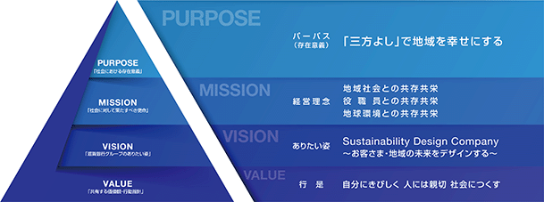
(2) 第７次中期経営計画の達成度
2019年４月よりスタートした第７次中期経営計画（期間５年間：2019年４月～2024年３月）では、次の経営指標を掲げ、その実現に向け取り組んでまいりました。達成度は次の表のとおりであります。
■長期的挑戦指標
（※1）2023年３月末実績。2024年３月末実績については、開示情報の透明性確保に向けて第三者検証を受ける予定であります。検証を受けた後、当行ホームページで公表いたします。
（※2）次世代基幹系システム関連費用を除くＯＨＲは64.19％となっております。
(3) 中長期的な経営戦略及び目標とする経営指標
（長期戦略）
地域や当行グループをとりまく環境が大きな転換期を迎える中、「実現したい地域社会の姿：自分らしく未来を描き、誰もが幸せに暮らせる社会」を目指し、バックキャスティングで策定した今後５年間の実行戦略が第８次中期経営計画（期間５年間：2024年４月～2029年３月）であります。
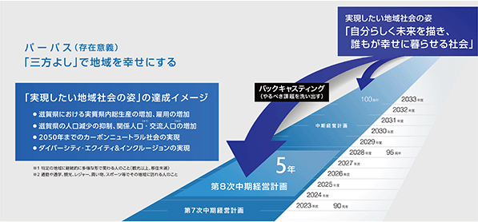
（価値創造ストーリー「地域を幸せにする好循環」）
当行グループ内外のさまざまな資本を活用し、お客さまの課題解決や地域の成長に資する投資を行い、経済活動を活性化させることで、ビジネス機会は拡大します。そのなかで、当行グループの稼ぐ力を向上させ、さらなる地域への投資につなげるとの価値創造ストーリーに掲げた「地域を幸せにする好循環」を生み出していきます。
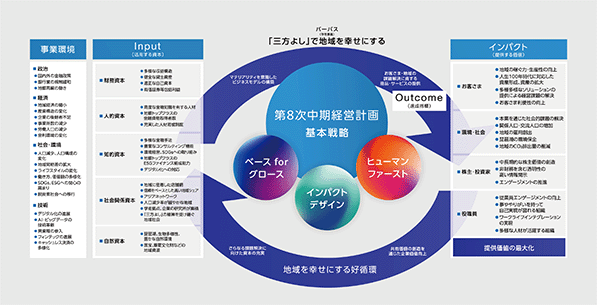
（第８次中期経営計画の基本戦略）
第８次中期経営計画では、お客さま・地域の持続可能な成長をデザインする「インパクトデザイン」、成長のための経営基盤の強化に取り組む「ベースforグロース」、人的資本の最大化を進める「ヒューマンファースト」の３つの基本戦略を中心に、お客さまや地域・社会の課題解決につなげ、「地域を幸せにする好循環」を生み出してまいります。第８次中期経営計画の基本戦略、目標とする経営指標は下表のとおりであります。
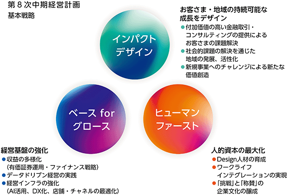
（第８次中期経営計画の達成指標）
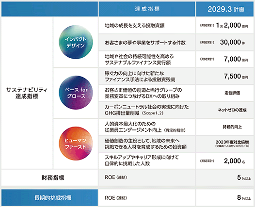
(4) 経営環境及び対処すべき課題
国内の景気については緩やかに回復しておりますが、物価上昇や海外景気の動向など、先行きは不透明な状況が続いております。そのような中、当行はお客さまと課題を共有し、細やかなコンサルティングを通じて、資金繰り支援や経営支援・再生支援、デジタル化支援などに迅速かつ丁寧に対応しております。
人口減少や気候変動などの社会的課題の深刻化に加え、ライフスタイルの変化や生成AIの革新的な進歩などによる社会構造の変化に伴い、とりまく環境は大きな転換期を迎えており、地方銀行の経営も変革が求められております。また、日本銀行による金融政策の変更等により「金利のある世界」が到来しております。
このような時代だからこそ、当行グループは第８次中期経営計画を基に、これまで強化してきた経営基盤を活用してさらなる成長に向けた変革に取り組むとともに、お客さまや社会へ提供する価値（インパクト）を最大化し、「地域を幸せにする好循環」を生み出してまいります。
次世代基幹系システムについて、銀行サービスの安定的な提供という公共性の高さに鑑み、2025年１月以降と公表しておりました利用開始時期を十分な開発・検証時間を確保するため見直すことといたしました。
また、プライム市場に上場する企業として市場からの期待リターンである株主資本コストを意識し、成長戦略を描くとともに資本効率を高め、ＲＯＥ向上に取り組んでまいります。
地域とともに歩む企業として、お客さま・地域の持続可能な成長をデザインし、「三方よし」で誰もが幸せに暮らせる社会を実現してまいります。
当行グループのサステナビリティに関する考え方及び取組は、次のとおりであります。
なお、文中の将来に関する事項は、当連結会計年度末現在において、当行グループが判断したものであります。
当行は、近江商人をルーツに持つ地方銀行として、「『三方よし』で地域を幸せにする」というパーパスのもと、「地域社会」「役職員」「地球環境」のサステナビリティを意識した経営理念を掲げ、事業活動を通じた社会的課題解決に重点的に取り組んでおります。
特に環境の取り組みにおいては、1999年に「環境方針」、2010年に「生物多様性保全方針」を制定し、本業を通じて環境問題を解決する「環境経営」の取り組みを先駆的に進めてまいりました。また、2020年２月には、ＳＤＧｓやパリ協定に整合した銀行経営のフレームワークである、国連の「責任銀行原則（ＰＲＢ）」に地方銀行で初めて署名いたしました。同年10月に制定した「サステナビリティ方針」では、経営理念の実践を通じて企業価値の向上を目指すとともに、地域との共創により持続可能な社会の実現に貢献することを表明しております。
さらに、2023年１月には、「サステナブルな社会の実現に向けた投融資方針」を制定し、ポジティブ・インパクトの拡大に向けて積極的に支援する取り組みや、ネガティブ・インパクトの軽減・回避に向けて慎重に検討するセクターを明示しております。
当行は、第７次中期経営計画で策定した実現したい地域社会の姿「自分らしく未来を描き、誰もが幸せに暮らせる社会」を、2024年４月からスタートした第８次中期経営計画においても長期戦略に掲げ、達成イメージを示しました。近江商人から受け継いだ「三方よし」を実践し、このイメージを具現化させていくことで、地域で暮らす誰もが幸福を感じられる社会の実現に貢献してまいります。
＜サステナビリティに関連する基本方針＞
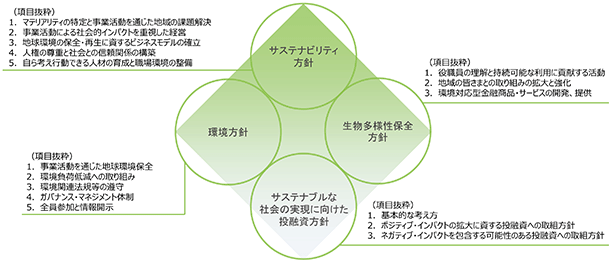
当行では、サステナビリティを事業活動の中核的なテーマとして認識し、取締役会において議論し、経営戦略やリスク管理に反映しております。具体的な対応や取り組みは、取締役頭取を委員長として設置したサステナビリティ委員会で協議し、委員会での議論の内容は、少なくとも年１回の頻度で取締役会に報告されます。また、取締役会は、報告された内容に対し適切に監督する態勢を構築しております。
サステナビリティ委員会は、常勤役員、全部室長、連結子会社社長をメンバーに年３回開催しております。委員会では、地域の脱炭素化をはじめとする中長期的な経営課題をテーマとして、責任銀行原則が定めるインパクト分析やＴＣＦＤ（気候関連財務情報開示タスクフォース）が推奨するシナリオ分析等の結果、ＩＳＯ14001に基づいた環境マネジメントシステムなどを活用しながら、対応方針や取組計画等を審議しており、重要な事項については経営会議（常務会）や取締役会へ内容を報告しております。
＜当行グループのサステナビリティ経営体制＞
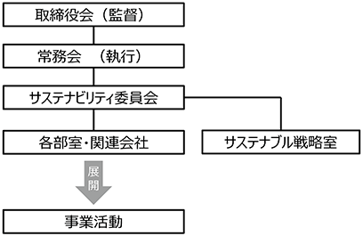
（２）戦略
①気候変動
当行は、2004年４月から中期経営計画に温室効果ガス排出量の削減目標を設定し、2007年４月には「地球環境との共存共栄」を掲げた経営理念を制定するなど、気候変動の原因となる地球温暖化への対応を重要な経営課題の一つと認識してまいりました。
また、2018年７月にＴＣＦＤ提言への賛同を表明し、株主・投資家をはじめとする幅広いステークホルダーとのエンゲージメントにつなげることを目的として、2019年度からＴＣＦＤ提言に基づく情報開示を実施しております。
＜リスク及び機会と影響の認識＞
当行では、短期（５年）、中期（10年）、長期（30年）の時間軸で気候変動に伴うリスク（移行リスク・物理的リスク）と機会を1.5℃シナリオ及び４℃シナリオを前提に評価しております。認識した気候変動リスク及び機会については、ＣＯ2排出量削減に関する取り組みを進めているほか、投融資に係る戦略への反映を検討しております。
＜炭素関連資産＞
当行の貸出金残高に占める炭素関連資産の割合は、31.4％となっております。
（「エネルギー」「運輸」「素材・建築物」「農業・食料・林産物」セクター向け貸出金残高。ただし、再生可能エネルギー発電事業を除く。）
＜シナリオ分析＞
シナリオ分析では、気候変動に関する政府間パネル（ＩＰＣＣ）や国際エネルギー機関（ＩＥＡ）等が公表している複数のシナリオを参照の上、パリ協定や2021年11月の国連気候変動枠組条約締約国会議（ＣＯＰ26）における合意内容等をふまえ、２つのシナリオ分析を実施いたしました。与信コストの増加については、中長期的な取り組みにより低減を図ることが可能であることから、影響は限定的と考えられます。
＜分析プロセス＞
・セクター毎のリスク（移行リスク・物理的リスク）と機会を分析
・移行リスクのシナリオ分析対象セクターを決定
・移行リスク、物理的リスクともに分析対象に応じたシナリオを設定し、与信コストへの影響を分析
＜地域の脱炭素化に向けた取り組み＞
2050年に脱炭素社会を実現するためには一刻も早い対策が必要となっており、脱炭素化の潮流は急激に加速しております。産業構造の転換も予想される中、大企業に比べて取り組みが遅れている中堅・中小企業においても脱炭素化に向けた対策を講じていくことが地域経済を守っていく観点からも重要となっております。一方、当行が本拠を置く滋賀県では多額のエネルギーコストが域外へ流出していることから、脱炭素化に向けて再生可能エネルギーの地産地消を進めることで、ＣＯ2排出量の削減はもちろん、資金の域内循環による経済効果、新たな産業・雇用の創出、自然災害に対する地域社会のレジリエンス向上などが期待できます。
このような考えのもと、当行は2024年４月、近畿エリアに本店を置く銀行として初めてエネルギー事業会社「株式会社しがぎんエナジー」を100％出資により設立いたしました。ＧＸ（グリーン・トランスフォーメーション）の取り組みを通じて地域の課題をエネルギーの観点から解決し、経済と環境の好循環を生み出すことを目指してまいります。
このほか、脱炭素化に向けた主体を自治体、企業、一般消費者のカテゴリーに分け、それぞれの脱炭素化を促進する取り組みを拡充し、本業を通じた地域の脱炭素化に貢献しております。
＜地域の脱炭素化に向けた戦略（「第８次中期経営計画」より抜粋）＞
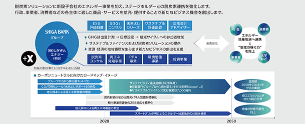
（株式会社しがぎんエナジーの取り組み）
・企業及び行政のＧＸ、ＳＸに向けたコンサルティング事業
・太陽光発電設備を活用したオンサイト・オフサイトＰＰＡ事業
・太陽光発電所の取得・運営事業
・環境価値に関する事業（環境価値の創出、売買、仲介等）
・脱炭素、資源循環に関連する事業会社への投資事業
（自治体等と連携した取り組み）
・環境省「脱炭素先行地域」への連携
湖南市との共同提案により、「脱炭素先行地域」の選定を受けております。他の自治体とも連携し、共同提案者として申請を行っております。
・サステナブル・ファイナンスの連携
滋賀県とのコラボレーションにより、「しがぎんサステナビリティ・リンク・ローン“しがＣＯ2ネットゼロ”プラン」を取り扱っております。
（法人・個人事業主のお客さまへの取り組み）
・「未来よしサポート」
脱炭素経営の第一歩となるＣＯ2排出量の“見える化”をサポートするクラウドツールを提供しております。
株式会社日立製作所との共同開発により、中小企業にも使いやすい設計としております。
・ＥＳＧ評価制度
Ｅ（環境）・Ｓ（社会）・Ｇ（ガバナンス）の３要素について、各10項目の取り組み状況をお取引先にヒアリングし、対話することで事業性を評価し、経営課題の共有化につなげております。
・ＳＤＧsコンサルティング
お取引先の経営戦略にＳＤＧsを取り入れ、サステナビリティ経営を通じて企業価値向上につなげるためのコンサルティングを実施しております。
・サステナブル・ファイナンス
お取引先のサステナビリティ経営を支援するため、サステナビリティ・リンク・ローン（SLL）、ポジティブ・インパクト・ファイナンス（PIF）、グリーンローン／ボンドなど、さまざまな資金調達手法を提供しております。
・カーボンニュートラルローン未来よし
脱炭素につながる設備投資を対象とする融資商品であり、ＥＳＧ評価制度の評価に応じた金利優遇を行うことで、企業の脱炭素化とＥＳＧ経営への取り組みを促します。
（個人のお客さまへの取り組み）
・『しがぎん』スーパー住宅ローン「未来よし」
脱炭素化の取り組みを一般家庭にも拡大していくための戦略商品として2023年４月より取り扱いを開始いたしました。太陽光パネル、蓄電池、エネファームのいずれかを設置することで、住宅ローンの金利を優遇。お客さまは光熱費の節約にもつながり、環境面でも経済面でもスマートな生活が実現できます。手続き面では「住宅ローンセンター」を設置して、申込から契約まで完全非対面で来店不要のスキームを構築。地域の住宅販売会社等とも連携し、脱炭素に向けた利用促進を図っております。
（洪水発生時の店舗の浸水を想定した取り組み）
洪水の発生時において、店舗の浸水被害を未然に防止するとともに、浸水発生時における営業停止から早期復旧するため、次のような取り組みを行っております。今後はより具体的な浸水リスクの可能性を検証して各拠点におけるＢＣＰ対策を行うなどして、地域に不可欠なインフラである金融機関としての機能維持に努めてまいります。
・店舗への浸水防止を目的として土のうを各店に備置
・浸水リスクが比較的高い店舗に止水版を設置
・停電発生時において業務を早期復旧するための非常用発電機を設置
・台風による大雨等を想定した全銀協ＢＣＰ風水害訓練の実施
・システム障害の発生等を想定したＢＣＰ訓練（現金手払い等）の実施、など
②自然資本
＜ネイチャーポジティブ（自然再興）に向けた取り組み＞
当行が本拠を置く滋賀県は、400万年以上の歴史があるとされている世界有数の古代湖“琵琶湖”を有しており、古くから琵琶湖を中心とした自然資本による恩恵（生態系サービス）を受けてまいりました。その恩恵は、滋賀県の歴史、産業、食文化、生活様式にまで幅広く及んでおり、かけがえのない存在となっております。一方で、土地開発や地球温暖化、特定外来種の影響などにより、生物多様性や生態系サービスの劣化が進んでおり、自然資本の適切な保全・回復に向けた取り組みは、地域経済のサステナビリティにおいても喫緊の課題となっております。
このような背景から、当行は生物多様性保全を重要な経営課題と認識し、生物多様性条約第10回締約国会議（ＣＯＰ10）で愛知目標が採択された2010年に、経営の基本方針として「生物多様性保全方針」を制定いたしました。また、2023年に制定した「サステナブルな社会の実現に向けた投融資方針」では、琵琶湖などのラムサール条約指定湿地、ユネスコ指定世界遺産、ワシントン条約の規制対象種のように、国際的に保護・保全が求められている人類の財産に重大な悪影響を及ぼす事業に対する投融資を行わない方針を定めております。
さらに、2024年１月には、自然関連財務情報開示タスクフォース（Taskforce on Nature-related Financial Disclosures：ＴＮＦＤ）が2023年９月に公表した開示提言（ＴＮＦＤ提言）に賛同し、開示提言の採用者（TNFD Adopter）として登録を行いました。自然環境に負の影響を与える資金の流れを、良い影響を与える「ネイチャーポジティブ（自然再興）」に転換していくため、ステークホルダーの皆さまと協力するとともに、ＴＮＦＤ提言に基づく取り組みを段階的に進め、進捗状況について開示してまいります。
（行政・環境保護団体等と連携した取り組み）
・地域のＳＤＧｓを推進する寄付スキーム「未来よし＋」
脱炭素関連の融資商品の利用実績に応じて当行が資金を拠出し、地域のＳＤＧsを推進する活動に寄付を行う独自のスキームであります。資金は、琵琶湖の絶滅危惧種であるニゴロブナやワタカの放流事業への寄付、森林保全事業の支援につながる「びわ湖カーボンクレジット」の購入などに充てられます。
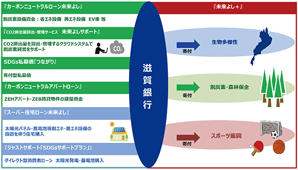
・琵琶湖の環境を保全する“いきものがたり”活動
地域の環境保護団体等と連携し、琵琶湖の生態系保全に向けた、ストーリー性のある環境ボランティア活動を展開しております。春には「外来魚駆除・釣りボランティア」、夏は「森づくりサポート活動」、秋は「ヨシ苗植えボランティア」、冬は「ヨシ刈り」のほか、地域で実施されるさまざまな活動にも参加しております。活動にはお取引先企業にも参加いただいており、ステークホルダーを巻き込んだ取り組みを展開しております。
③人的資本
(A) 第７次中期経営計画（計画期間：2019年４月１日～2024年３月31日）
当行は2019年４月にスタートした第７次中期経営計画において目指す姿を「Sustainability Design Company」とし、「Bank」の発想の枠を超え、お客さまや地域社会の持続可能な発展をデザインし、地域になくてはならない「Company」になるとしております。
この経営戦略を実現するために、求める人材像を「個性を磨き、価値創造の主役として、地域の未来へ挑戦できる人」と定義し、人材育成方針及び社内環境整備方針のもと、「課題解決型人材」及び「自律型人材」の育成に取り組んでおります。
＜人材育成方針＞
当行は、人材育成方針として「お客さま・地域社会から必要とされる行員の育成」を掲げ、以下のような行員の育成に取り組んでおります。
・社会人の良識と高い職業観を有している行員
・未来志向で物事を捉え、“真の答えはお客さまの中にある”を実践できる行員
・環境変化に柔軟に対応し、こだわりをもって物事をやり遂げることのできる行員
・いたわり、思いやりの心を持ち、チーム、組織として自ら考働できる行員
＜社内環境整備方針＞
当行は、2020年10月に制定したサステナビリティ方針において、「自ら考え行動できる人材の育成と職場環境の整備」を掲げております。多様な個性や働き方を尊重し、ワーク・ライフ・バランスが充実するなど、一人ひとりが個々の能力を最大限に発揮できる環境づくりに取り組んでおります。
また、当行は、職員が十分な能力を発揮するためには経済的に安定していることが重要と考え、ファイナンシャル・ウェルネスの取り組みを進めております。具体的には、金融リテラシー向上を目的とした金融教育を実施するとともに、従業員持株会や財産形成預金、確定拠出年金、従業員融資などの各種制度を整備し、経済面から職員を支援することで、従業員満足度や意欲の向上を図っております。
これまでの取り組みを受けて、第８次中期経営計画では下記のとおり定めております。
(B) 第８次中期経営計画（計画期間：2024年４月１日～2029年３月31日）
当行は2024年４月にスタートした第８次中期経営計画において、お客さま、地域の持続可能な成長をデザインする「インパクトデザイン」、成長のための経営基盤の強化に取り組む「ベース for グロース」、人的資本の最大化を進める「ヒューマンファースト」の３つの基本戦略を掲げております。そのような中、人材への投資が経営戦略の優先事項と考え、求める人材像を「個性を磨き、価値創造の主役として、地域の未来へ挑戦できる人」と定義し、人材育成方針及び社内環境整備方針のもと、従業員エンゲージメントの向上を図るべく、「個の能力向上」と「組織の活性化」に取り組んでおります。
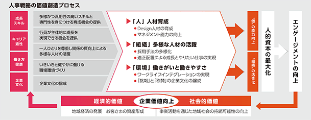
＜人材育成方針＞
当行は、人材育成方針として「Design人材の育成」を掲げ、以下のような行員の育成に取り組んでおります。
・お客さま、地域の課題を創造し、解決策をデザインするとともに、実現まで結び付けられる人材
預金、融資業務をリレーションの機会と捉え、お客さま、地域の価値創造をデザインし、ソリューションにつなげる能力とスキルの向上を図る。
・自らのキャリア（＝ありたい自分）をデザインし、その実現に向け挑戦し続ける人材
変化が激しい時代において、自らの「ありたい姿」を描きながら、高い志を持ち挑戦し続ける人材を育成、支援する。
＜社内環境整備方針＞
当行は、2020年10月に制定したサステナビリティ方針において、「自ら考え行動できる人材の育成と職場環境の整備」を掲げております。多様な個性や働き方を尊重し、一人ひとりが個々の能力を最大限に発揮できる環境づくりに取り組んでおります。
また、当行は、職員が十分な能力を発揮するためには経済的に安定していることが重要と考え、ファイナンシャル・ウェルネスの取り組みを進めております。具体的には、金融リテラシー向上を目的とした金融教育を実施するとともに、従業員持株会や財産形成預金、確定拠出年金、従業員融資などの各種制度を整備し、経済面から職員を支援することで、従業員満足度や意欲の向上を図っております。
銀行が業務を遂行するうえで直面するリスクは従来にも増して複雑化、多様化しております。
当行では、「勘や経験」に頼らない「合理的な尺度」を持って、リスクを正確に把握しコントロールするために「内部格付制度」や「統合的なリスク管理体制」を構築しております。また、合理的なリスクテイクのもと、継続的な収益確保のため、経営戦略と一体となったリスク管理を行う「リスク・アペタイト・フレームワーク」を導入しております。
また、サステナビリティの観点から、中長期的に企業価値に重大な影響をもたらす可能性があると考えられる事象を「リスクと機会」として捉え、「リスク・アペタイト・フレームワーク」を通じて経営陣が議論・共有することで、あらかじめ必要な対策を講じてリスクを抑制するとともに、当行の経営方針・目的と戦略・リスクの取り方が整合的であるか確認しております。
リスク管理においては、信用リスク、市場リスク、流動性リスク、風評リスクなどを総体的に捉え、金融機関の経営体力である自己資本と対比・検証することによって適切に管理しております。
2023年１月には「サステナブルな社会の実現に向けた投融資方針」を制定し、環境や社会に対してネガティブ・インパクトを含有する可能性がある投融資について、その影響を軽減・回避するための考え方と対応を明確に示すとともに、案件検討段階でチェックする体制を構築いたしました。
こうした方針をもとに、投融資先とのエンゲージメントを強化し、地域社会や地球環境のサステナビリティに資する取り組みに向けてお金の流れを生み出し、リスク管理にもつなげる「経済と環境の好循環」を目指してまいります。
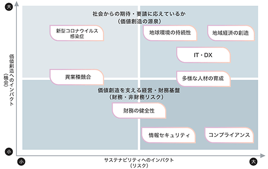
① 第７次中期経営計画の期間中（2019年４月～2024年３月）における指標
＜マテリアリティ１：地域経済の創造＞
地域やお取引先の持続可能な発展に向けた挑戦指標を次のように定めております。
＜マテリアリティ２：地球環境の持続性＞
環境負荷低減の目標を次のように定めております。 (Scope1, Scope2 基準）
（注１）滋賀県における二酸化炭素の排出量を実質ゼロにする取り組み。滋賀県が中心となり、県民、事業者等多様な主体と連携して取り組みを推進しております。
（注２）当行グループの基準年及び2023年３月期における温室効果ガス排出量は次の通りであります。
2013年度（基準年）：9,245 t 2023年３月期：3,069 t
2024年３月末実績については、開示情報の透明性確保に向けて第三者検証を受ける予定であり、検証を受けた後、
＜マテリアリティ３：多様な人材の育成＞
持続可能な社会の担い手となる多様な人材を育成するための挑戦指標を次のように定めております。
② 第８次中期経営計画中（2024年４月～2029年３月）における指標＜再掲＞
③ 人的資本に対して設定するもの（当行単体）
事業内容が異なる連結グループ全体での設定が困難なため、当行単体で指標及び目標を設定しております。
人材育成方針に関する指標を次のように定めております。
（注）課題解決型ビジネスができる人材の育成研修であり、「コンサルタント（個人・法人向け課題解決ビジネス）」、「高度専門人材（Ｍ＆Ａ、ＩＴ・FinTech）」「グローバル人材の育成」「資産運用担当者」の育成等を含んでおります。
社内環境整備方針に関する指標を次のように定めております。
なお、社内環境整備方針の指標につきましては目標を定めておりませんが、第７次中期経営計画の基本戦略（未来創造挑戦項目）に掲げる「考働改革」に取り組み、生きがい・働きがいを感じられる職場環境づくりに積極的に努めております。
（注１）中途採用者の管理職数とは、中途採用者の課店長代理級以上の人数を示しております。
（注２）有給休暇の総取得日数を行員、専任行員の平均人数で除して算出しております。
なお、2024年４月にスタートした第８次中期経営計画において、指標及び目標を以下の通り設定しております。
(注) １．管理職候補者とは当行の主任（役席者の１つ下の職階）を示しております。
２．有給休暇の総取得日数を行員、専任行員の平均人数で除して算出しております。
３．各指標における人件費の算出については、該当人数に平均年間給与を乗じて算出しております。
有価証券報告書に記載した事業の状況、経理の状況等に関する事項のうち、経営者が連結会社の財政状態、経営成績及びキャッシュ・フローの状況に重要な影響を与える可能性があると認識している主要なリスク及び管理体制は、以下のとおりであります。なお、記載における将来に関する事項は、当連結会計年度末現在において判断したものであります。
(リスク管理体制の概要)
当行では、リスクを適切に管理することが経営の健全性を維持し、収益性を向上するための本質的な業務であるとの認識のもと、取締役会等において、リスク管理に関する基本方針を策定するとともに、経営に重要な影響を与える事項の報告を受ける体制としております。
また、リスク管理に関して議論する会議体としてＡＬＭ委員会等を定期的に開催し、各種リスクに関する報告を受けるとともに、当行全体のリスク管理の状況に係る問題点等について審議し、必要に応じて審議内容を取締役会へ報告する体制としております。（リスク管理体制図については、「第４ 提出会社の状況 ４ コーポレート・ガバナンスの状況等」をご参照ください）
（経営戦略とリスク管理）
当行は、銀行業を中心として地域を幸せにする好循環を生み出していくため、様々な経営戦略を実施し、企業価値の向上を目指しております。経営戦略や財務計画を達成するため、進んで引き受けようとするリスクの種類と水準を明確にする枠組みである「リスク・アペタイト・フレームワーク」の考え方に基づき、健全性と効率性の両面から資本・資金を最大限活用すべく運営しております。
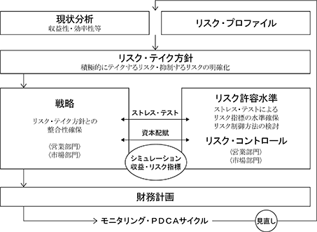
また、サステナビリティの観点から、人口動態やデジタル化等、中長期的に企業価値に重大な影響をもたらす可能性があると考えられる事象を「リスクと機会」として捉え、経営陣が議論・共有することで、あらかじめ必要な対策を講じてリスクを抑制するとともに、当行のパーパスと戦略・リスクの取り方が整合的であるか確認しております。
経営戦略の策定及びモニタリングに際してはフォワードルッキングな観点から、「金利のある世界」での景気循環を考慮した蓋然性の高いシナリオ策定等各種シミュレーションを実施しております。ただし、様々な要因により戦略が奏功せず、想定していた結果をもたらさない可能性があります。また、リスク管理手法の一部には過去の市場動向や経験などに基づいているものがあることから、将来発生するリスクを正確に予測することができず、リスク管理が有効に機能しない可能性があります。
このような認識のもと、半期毎に経営戦略にあわせてリスク管理の方針を見直すとともに、リスク管理においては、特定の手法によらず個別様々な方法を用いることにより、戦略の実現と適切なリスク管理体制の構築に努めております。
（重要なリスクへの対応）
当行は地域の持続可能な発展を支える地域金融機関として、お客さまからお預かりした預金を貸出金や有価証券等で運用していることから、信用リスク及び市場リスクに晒されております。
具体的には、ゼロゼロ融資返済の本格化や物価高等の影響から、お取引先の返済能力の悪化による追加的な与信関係費用の増加（信用リスクの顕在化）や、日本銀行の金融政策変更等による国内外の金利情勢の転換をはじめとした市況の変化から、有価証券運用における評価損や減損の発生（市場リスクの顕在化）などの事象が当行の業績に影響を及ぼす可能性があります。
このため当行では、お取引先の実態把握に努め円滑な資金繰り支援に取り組んでいくほか、当行独自の内部格 付制度を構築・活用するなどリスク管理の高度化に努めるとともに、統計的手法であるＶａＲを用いて、ある確 率（信頼水準99％）のもと一定期間（例えば１年間）に被る可能性のある最大損失額（リスク量）を見積もり、把握しております。
これらのリスクが顕在化した場合に備え、当行では業務の継続性を確保する観点から、事業を行ううえで生じるリスクに対して、自己資本を業務部門別・リスクカテゴリー別に配賦し、リスク量が自己資本の範囲内に収まるよう業務運営を行っております。
また、各種法令等違反を含め社会規範から逸脱した行為を行う等社会からの期待に沿えない場合、当行の信用や業績、業務運営に影響を及ぼす可能性があることから、継続して各役職員のコンプライアンス・マインドの醸成に取り組んでおります。
さらに、自然災害の発生や感染症の流行、大規模システム障害等が発生することで、当行の施設の被災や必要な人的資源の不足等により業務停止を余儀なくされ、地域経済の金融インフラとしての機能を提供し続けることができない可能性があります。この場合、経営戦略等が想定どおり遂行できず、当行の事業及び財務状況に影響を及ぼす可能性があります。
これらリスク・課題については、銀行経営の根幹をなすものであるとの認識に基づき、お客さま目線に立って影響範囲の最小化を最優先に、経営陣の主導的な関与のもと事業の継続性を高める管理態勢を強化しております。
（個別のリスク）
(1) 信用リスク
① 予想を上回る貸倒の発生
当行は、法的に経営破綻の事実が発生している債務者(以下「破綻先」という。)及びそれと同等の状況にある債務者(以下「実質破綻先」という。)以外の債務者に係る債権については、貸出先の状況に応じて、過去の一定期間における貸倒実績から算出した貸倒実績率等に基づき見積もった貸倒引当金を計上しております。
しかしながら、今後の景気の動向や貸出先の経営状況の変動によっては、実際の貸倒が当該見積りを大幅に上回り、多額の貸倒償却又は引当負担が発生し、当行の与信関係費用が増加する可能性があります。
② 担保価値の下落
当行は、破綻先・実質破綻先等に係る債権については、債権額から担保の評価額及び保証による回収が可能と認められる額を控除して貸倒引当金を計上又は債権額から直接減額(以下「部分直接償却」という。)しております。したがって、当行が貸出金等の担保として取得している不動産や有価証券などの担保価値が下落すると、貸倒引当金の積み増しや部分直接償却の追加が必要となり、当行の与信関係費用が増加する可能性があります。また、当行ではバランスシートの健全性の観点から、独自に不良債権のオフバランス化をはじめ、不良債権に対する処置や対応を進めております。この過程において、不良債権を想定外の時期若しくは方法により、又は想定を超えるディスカウント幅で売却するなどした場合には、多額の償却が発生し、当行の与信関係費用が増加する可能性があります。
③ 貸出先への対応
当行のお取引先の中には、当該企業の属する業界が抱える固有の事情等の影響を受けている企業がありますが、国内外の経済環境及び特定業種の抱える固有の事情等の変化により、当該業種に属する企業の財政状態が悪化する可能性があります。
また、当行は、回収の効率・実効性その他の観点から、貸出先に債務不履行等が生じた場合においても、当行が債権者として有する法的な権利のすべてを必ずしも実行せず、これらの貸出先に対して債権放棄又は追加貸出を行って支援をすることもあり得ます。このような貸出先の信用状況の悪化や支援により、当行の与信関係費用が増加する可能性があります。
④ 権利行使の困難性
不動産、有価証券における流動性の欠如又は価格の下落等の事情により、担保権を設定した不動産若しくは有価証券を換金し、又は貸出先の保有するこれらの資産に対して強制執行することが事実上できず、当行の与信関係費用が増加する可能性があります。
⑤ 地域への依存
当行は、滋賀県を中心とした近畿圏並びに東京・東海地区を営業基盤としていることから、地域経済が悪化した場合には、信用リスクが増加するなどして当行の業績に影響を及ぼす可能性があるほか、業容の拡大を図れない可能性があります。
(2) 市場リスク
① 金利変動に関するリスク
当行の主たる収益源は、預金等による資金調達と貸出金や有価証券を中心とした資金運用による利鞘収入(資金利益)であります。これらの資金調達・運用に適用される金利は、契約時点、あるいは変動金利型の場合は契約後の予め定められた金利更改時点の約定期間別(１カ月、３カ月、１年等)の市場金利を基準に決定されますので、金融政策の変更あるいは当行の資金調達・運用の期間毎の残高構成によっては、金利変動が当行の収益にとってマイナスに作用する可能性があります。
また、当行では、資金運用の相当部分を国債、地方債等の債券で運用(会計上は「その他有価証券」に分類)しておりますが、金利の上昇(すなわち債券価格の下落)は、期末時点の時価評価により評価益の減少又は評価損の発生を通じて、当行の自己資本比率の低下を招くおそれがあります。
② 保有株式の株価下落リスク
当行は、市場性のある株式を相当額保有しておりますが、大幅な株価下落が発生した場合には、当行が保有する株式に減損又は評価損が発生し、当行の業績に影響を及ぼすとともに、自己資本比率の低下を招くおそれがあります。
③ 為替リスク
当行は、資産及び負債の一部を外貨建てとしておりますが、為替相場の不利な変動によって当行の業績に影響を及ぼすとともに、自己資本比率の低下を招くおそれがあります。
(3) 流動性リスク
① 資金繰りリスク
経営環境の大きな変化や当行の信用力の低下等により、必要な資金が確保できず資金繰りが悪化することや、あるいは通常より著しく不利な条件での資金調達を余儀なくされることで、当行の信用や業績に影響を及ぼす可能性があります。
② 市場流動性リスク
保有する有価証券等の売買において、市場の混乱等により取引が困難になることや、通常よりも著しく不利な価格での取引を余儀なくされることで、当行の業績に影響を及ぼす可能性があります。
③ 外貨流動性リスク
当行は、収益機会拡大のため、外貨預金に加えコール市場やレポ市場から外貨資金を調達し、貸出金や有価証券投資等の運用を行っております。市場変動等により外貨の調達コストが上昇すると、収益の縮小や通常より著しく不利な条件での資金調達を余儀なくされることで、当行の業績に影響を及ぼす可能性があります。
(4) 自己資本比率規制等に関するリスク
当行は、海外営業拠点を有しておりますので、連結自己資本比率及び単体自己資本比率は「銀行法第14条の2の規定に基づき、銀行がその保有する資産等に照らし自己資本の充実の状況が適当であるかどうかを判断するための基準」(平成18年金融庁告示第19号)に定められた国際統一基準に基づく規制を満たす必要があります。
他にレバレッジ比率（自己資本比率規制の補完指標）や流動性カバレッジ比率・安定調達比率（流動性にかかる健全性の基準指標）においても最低水準が定められております。当行がこれらの比率を下回った場合には、当局による社外流出の制限、あるいは業務の全部又は一部の停止等を含む様々な命令を受けることとなり、その結果、業務運営に影響を及ぼす可能性があります。
また、当行が業務を行うにあたっては当該規制のほか、様々な法律、規制、政策、実務慣行、会計制度及び税制等を適用しております。これらが将来において変更された場合、若しくは新たな規制等が導入された場合に、その内容によっては、当行の業績又は財政状態に影響を及ぼす可能性があります。
なお、当行の自己資本比率に影響を及ぼす要因には以下のものが含まれます。
・与信関係費用の増加による自己資本の毀損
・有価証券ポートフォリオの価値の低下
・退職給付債務の増加による自己資本の減少
・繰延税金資産の計上にかかる制限
・将来の自己資本比率の算定基準が変更されることにより、自己資本比率が変動する可能性
・債務者及び株式・債券等の発行体の信用力悪化による信用リスクアセット及び期待損失の増加
・本項記載のその他の不利益な展開
(5) オペレーショナル・リスク
① 事務リスク
当行では、堅確な事務が信用の基本であることを認識し、各業務の事務取扱要領を定め、本部の事務指導などにより事務品質の向上と牽制・検証機能の強化に努めております。しかしながら、仮に銀行業務運営の過程で故意又は過失による重大な事務事故等が発生した場合には、当行の信用や業績に影響を及ぼす可能性があります。
② 情報漏洩リスク
当行では、個人情報保護方針を制定するとともに、情報管理の規程等を整備し、また、情報セキュリティ委員会を設置して厳正な情報管理に努めております。しかし、万一情報の漏洩・紛失及び不正利用等が発生した場合には、当行の信用や業績に影響を及ぼす可能性があります。
③ システムリスク
当行は、コンピュータシステムの安全稼動及びシステムに関する情報保護と安全な利用に万全を尽くしております。しかしながら、想定外のコンピュータシステムの障害や誤作動、不正利用等の発生、また重要なシステムの新規開発・更改等により重大なシステム障害が発生した場合には、当行の信用や業績に影響を及ぼす可能性があります。
④ 法務リスク
取引の法律関係の不確実性によって発生するリスクや将来的な法令等の変更によって、当行の業績に影響を及ぼす可能性があります。
⑤ 人的リスク
当行は、多数の職員を雇用しており、有能な人材の確保や育成に努めておりますが、十分な人材の確保・育成ができない場合には、当行の競争力や効率性が低下し、業績又は財政状態に影響を及ぼす可能性があります。また、人事処遇や勤務管理などの人事労務上の問題等に関連する訴訟等が発生した場合、当行の信用や業績に影響を及ぼす可能性があります。
(6) その他
① 金融犯罪に係るリスク
キャッシュ・カードの偽造・盗難や振り込め詐欺、あるいはインターネットバンキングを標的とした預金の不正な払戻し等の金融機関を狙った犯罪が多発しております。また、外部からのサイバー攻撃や不正アクセス、コンピュータウィルス感染等により、顧客情報の流出や情報システム等の誤作動が生じる可能性があります。
このような状況を踏まえ、当行では、金融犯罪による被害発生を未然に防止するため、セキュリティ強化に向けた取り組みを行っております。しかしながら、高度化する金融犯罪の発生により、被害に遭われたお客さまに対する補償や、新たな未然防止対策に係る費用等経費負担の増大、又は信用の失墜等により、当行の業績や財政状態に影響を及ぼす可能性があります。
② マネー・ローンダリング、テロ資金供与、拡散金融及び制裁違反に係るリスク
当行では、マネー・ローンダリング、テロ資金供与、拡散金融及び制裁違反防止のための態勢整備を経営上の重要な課題と位置づけ、リスクベース・アプローチに基づく適切な管理態勢の構築に取り組んでおります。
しかしながら、何らかの原因により犯罪者等に当行の金融機能（商品・サービス）を不正に利用された場合には、当行の信用や業績、業務運営に影響を及ぼす可能性があります。
③ コンプライアンス・リスク
当行は、各種法令等が遵守されるよう役職員にコンプライアンスを徹底しておりますが、万一法令等が遵守されなかった場合、あるいは、社会規範から逸脱した行為が顕在化する（コンダクト・リスク）ことにより、当行の信用や業績に影響を及ぼす可能性があります。
④ 大規模自然災害の発生、感染症の流行等に関するリスク
大規模自然災害や感染症の流行等の外的要因により、社会インフラに障害が発生し、当行の役職員や店舗等の施設が被害を受けた場合には、業務継続に支障をきたす可能性があります。加えて、これらの事象による悪影響が経済・市場全体に波及し、各種リスクが増加あるいは顕在化した場合には、当行の業績に影響を及ぼす可能性があります。
⑤ 風評リスク
当行に対する中傷や風評等が流布し拡大した場合、当行の信用や業績に影響を及ぼす可能性があります。
⑥ 気候変動に係るリスク
異常気象による洪水など自然災害の激甚化、あるいは災害の発生頻度の増加によるお取引先の事業停滞や当行担保物件の毀損等が当行の業績に影響を及ぼす可能性があります。また、脱炭素社会への移行に伴う政策や規制対応がお取引先の事業や業績に及ぼす影響により、当行の信用や業績にも影響が及ぶ可能性があります。
⑦ 業務範囲拡大・業務委託に伴うリスク
当行は、法令等の規制緩和に伴い、新たな収益機会を得るために業務範囲を拡大することがあります。
当行が業務範囲を拡大することに伴い、新たなリスクに晒されるほか、当該業務の拡大が予想通りに進展せず、当初想定した結果をもたらさない可能性があります。
また、効率的な業務運営を行うため、当行の業務の一部を他社に委託する場合があります。
当行業務の委託先において、委託した業務に係る事務事故、システム障害、情報漏洩等の事故が発生した場合に、当行の信用や業績に影響を及ぼす可能性があります。
⑧ 競争に関するリスク
金融制度の規制緩和の進展に伴い、銀行・証券・保険などの業態を越えた競争や他業種から金融業界への参入などにより、金融業界の競争は一段と激化しております。その結果、当行が他金融機関等との競争において優位性を得られない場合、当行の業績や財政状態に影響を及ぼす可能性があります。
⑨ 退職給付債務に係るリスク
当行の退職給付費用及び債務は、年金資産の期待運用利回りや将来の退職給付債務算出に用いる年金数理上の前提条件に基づいて算出しておりますが、市場環境の急変等により、実際の結果が前提条件と異なる場合、又は前提条件に変更があった場合には、退職給付費用及び債務が増加する可能性があります。
⑩ 固定資産の減損に係るリスク
当行は、営業拠点等の固定資産を保有しておりますが、今後の経済環境や不動産価格の変動あるいは当該固定資産の用途変更等によって、当該固定資産の収益性が低下し、減損損失が発生した場合には、当行の業績に影響を及ぼす可能性があります。
当連結会計年度における当行グループ（当行、連結子会社）の財政状態、経営成績及びキャッシュ・フロー（以下「経営成績等」という。）の状況の概要は次のとおりであります。
当連結会計年度における我が国経済は、コロナ禍を乗り越え、緩やかに回復しており、今年２月には日経平均株価が34年ぶりに史上最高値を更新しました。企業全体の収益が改善するなか、一部自動車メーカーの生産・出荷停止の影響はありましたが、設備投資は緩やかな増加傾向にあります。また、個人消費は物価上昇の影響等があるものの、底堅く推移している状況となっております。
滋賀県の経済は、持ち直しの動きが継続しております。一方で、輸送機械をはじめ製造業全体の生産活動は低下しており、需要面では、実質個人消費の伸びは緩やかな上昇にとどまっております。投資面では、民間設備投資や住宅投資、公共投資が減少している状況となっております。
このような状況のなか、当行は、企業価値・存在価値をさらに高めるため、2019年度より第７次中期経営計画「未来を描き、夢をかなえる」（期間：５年間：2019年4月～2024年3月）をスタートし、グループの総力をあげて、「お取引先や地域社会の持続可能な発展を企画して創る、従来の枠組み・発想を超える」という強い想いを込めた「Sustainability Design Company」の実現に向けて取り組んでまいりました。
第７次中期経営計画最終年度となる当連結会計年度の財政状態・経営成績は、以下のとおりとなりました。
財政状態につきましては、総資産残高は、7,970,551百万円で前連結会計年度末に比べ664,852百万円の増加となりました。
資産項目の主要な勘定残高は、有価証券が1,857,431百万円（前連結会計年度末比341,853百万円の増加）、貸出金が4,475,442百万円（同131,801百万円の増加）であります。
一方、負債の部の合計は、7,479,663百万円で前連結会計年度末に比べ615,186百万円の増加となりました。
負債項目の主要な勘定残高は、預金が5,803,032百万円（前連結会計年度末比88,664百万円の増加）、譲渡性預金が25,360百万円（同4,971百万円の減少）、コールマネー及び売渡手形が346,092百万円（同108,186百万円の増加）、債券貸借取引受入担保金が241,330百万円（同35,757百万円の増加）、借用金が882,628百万円（同344,172百万円の増加）等であります。
純資産の部の合計は、490,887百万円で前連結会計年度末比49,665百万円の増加となりました。これは、その他有価証券評価差額金が前連結会計年度末比24,082百万円増加したことが主因であります。
経営成績につきましては、経常収益は、122,630百万円で前期比7,341百万円の増収となりました。これは、貸出金利息ならびに有価証券利息配当金の増加等による資金運用収益の増加（前期比16,138百万円の増加）を主因としております。
一方、経常費用は、98,663百万円で前期比3,415百万円の増加となりました。これは、借用金利息の増加等による資金調達費用の増加（前期比9,980百万円の増加）を主因としております。
その結果、当連結会計年度の経常利益は前期比3,925百万円増益の23,967百万円、親会社株主に帰属する当期純利益は同1,082百万円増益の15,940百万円となりました。
また、包括利益はその他有価証券評価差額金の増加幅が拡大したことを主因として、前連結会計年度比70,997百万円増加の55,925百万円となりました。
なお、当行グループは、銀行業の単一セグメントであるため、セグメントの業績は記載しておりません。
当行グループの当連結会計年度のキャッシュ・フローの状況は以下の通りであります。
営業活動によるキャッシュ・フローにおいては、借用金、コールマネー、債券貸借取引受入担保金の増加等により、453,292百万円の収入（以下「キャッシュ・イン」という。）となりました。前期との比較でも、主として借用金が前期の減少から当連結会計年度は増加に転じたことから、936,726百万円のキャッシュ・インの増加となりました。
また、投資活動によるキャッシュ・フローは、有価証券の取得による支出が有価証券の売却および償還による収入を上回り、288,586百万円の支出（以下「キャッシュ・アウト」という。）となりました。前期との比較では、有価証券の売却による収入の減少等により、230,597百万円のキャッシュ・アウトの増加となりました。
さらに、財務活動によるキャッシュ・フローは、配当金の支払ならびに自己株式の取得による支出により6,280百万円のキャッシュ・アウトとなりました。前期との比較では、自己株式の取得による支出や配当金の支払の減少により、1,673百万円のキャッシュ・アウトの減少となりました。
これらの結果、現金及び現金同等物は、前連結会計年度末に比べ158,425百万円増加し、当連結会計年度末残高は1,359,724百万円となりました
(参考)
当連結会計年度の資金運用収支は、国内では前連結会計年度と比べ6,256百万円増加し54,539百万円、海外では同98百万円減少し648百万円、合計では同6,158百万円増加し55,187百万円となりました。また、信託報酬は合計で前連結会計年度と比べ0百万円減少し0百万円、役務取引等収支は合計で同1,488百万円増加し14,265百万円、その他業務収支は合計で同8,709百万円増加し△4,890百万円となりました。
(注) １ 「国内」とは、当行(海外店を除く)及び連結子会社であります。なお、特別国際金融取引勘定分は国内に含めております。(以下、同。)
２ 「海外」とは、当行の海外店であります。
３ 資金調達費用は、金銭の信託運用見合費用(前連結会計年度1百万円、当連結会計年度1百万円)を控除して表示しております。
４ 資金運用収益及び資金調達費用の合計欄の上段の計数は、国内と海外の間の資金貸借の利息であります。
国内では、当連結会計年度の資金運用勘定平均残高は貸出金を中心に6,540,238百万円となり、利回りは1.12％となりました。一方、資金調達勘定平均残高は預金等を中心に7,100,981百万円、利回りは0.26％となりました。前連結会計年度との比較では、資金運用勘定平均残高は200,801百万円の増加で利回りは0.22％の上昇、資金調達勘定平均残高は561,287百万円の増加で利回りは0.13％の上昇となりました。
海外では、当連結会計年度の資金運用勘定平均残高は貸出金と有価証券を中心に71,800百万円となり、利回りは4.86％となりました。一方、資金調達勘定平均残高は預金等で71,830百万円となり、利回りは3.96％となりました。前連結会計年度との比較では、資金運用勘定平均残高は14,860百万円の増加で利回りは1.96％の上昇、資金調達勘定平均残高は15,072百万円の増加で利回りは2.37％の上昇となりました。
(注) １ 平均残高は、原則として日々の残高の平均に基づいて算出しておりますが、連結子会社については期首・期末残高の平均を利用しております。
２ 「国内」とは、当行(海外店を除く)及び連結子会社であります。
３ 資金運用勘定は無利息預け金の平均残高(前連結会計年度393,753百万円、当連結会計年度766,349百万円)を、資金調達勘定は金銭の信託運用見合額の平均残高(前連結会計年度21,021百万円、当連結会計年度30,504百万円)及び利息(前連結会計年度1百万円、当連結会計年度1百万円)を、それぞれ控除して表示しております。
４ ( )内は、国内と海外の間の資金貸借の平均残高及び利息(内書き)であります。
(注) １ 平均残高は、日々の残高の平均に基づいて算出しております。
２ 「海外」とは、当行の海外店であります。
３ ( )内は、国内と海外の間の資金貸借の平均残高及び利息(内書き)であります。
(注) １ 資金運用勘定は無利息預け金の平均残高(前連結会計年度393,753百万円、当連結会計年度766,349百万円)を、資金調達勘定は金銭の信託運用見合額の平均残高(前連結会計年度21,021百万円、当連結会計年度30,504百万円)及び利息(前連結会計年度1百万円、当連結会計年度1百万円)を、それぞれ控除して表示しております。
２ 国内と海外の間の資金貸借の平均残高及び利息は、相殺して記載しております。
当連結会計年度の役務取引等収益は、預金・貸出業務、為替業務、カード業務、投資信託・保険販売業務を中心としておりますが、国内と海外の合計で前連結会計年度に比べ2,344百万円増加し19,995百万円となりました。また、役務取引等費用は合計で前連結会計年度に比べ856百万円増加し5,730百万円となりました。
(注) １ 「国内」とは、当行(海外店を除く)及び連結子会社であります。
２ 「海外」とは、当行の海外店であります。
(注) １ 「国内」とは、当行(海外店を除く)及び連結子会社であります。
２ 「海外」とは、当行の海外店であります。
３ ① 流動性預金＝当座預金＋普通預金＋貯蓄預金＋通知預金
② 定期性預金＝定期預金＋定期積金
(注) １ 「国内」とは、当行(海外店を除く)及び連結子会社であります。
２ 「海外」とは、当行の海外店であります。
「外国政府等」とは、外国政府、中央銀行、政府関係機関又は国営企業及びこれらの所在する国の民間企業等であり、「銀行等金融機関の資産の自己査定並びに貸倒償却及び貸倒引当金の監査に関する実務指針」(日本公認会計士協会銀行等監査特別委員会報告第４号 令和４年４月14日)に規定する特定海外債権引当勘定を計上している国の外国政府等の債権残高を掲げることとしておりますが、前連結会計年度末(2023年３月31日)、当連結会計年度末(2024年３月31日)とも、該当事項はありません。
(注) １ 「国内」とは、当行(海外店を除く)及び連結子会社であります。
２ 「海外」とは、当行の海外店であります。
３ 「その他の証券」には、外国債券及び外国株式を含んでおります。
連結会社のうち、「金融機関の信託業務の兼営等に関する法律」に基づき信託業務を営む会社は、当行１社であります。
① 信託財産の運用／受入状況(信託財産残高表)
(注) 共同信託他社管理財産については、前連結会計年度(2023年３月31日)及び当連結会計年度(2024年３月31日)のいずれも取扱残高はありません。
② 元本補填契約のある信託の運用／受入状況(期末残高)
(参考)
自己資本比率は、銀行法第14条の２の規定に基づき、銀行がその保有する資産等に照らし自己資本の充実の状況が適当であるかどうかを判断するための基準(平成18年金融庁告示第19号)に定められた算式に基づき、連結ベースと単体ベースの双方について算出しております。
当行は、国際統一基準を適用のうえ、信用リスク・アセットの算出においては基礎的内部格付手法を、オペレーショナル・リスク相当額の算出においては標準的計測手法を採用しております。また、当行はマーケット・リスク規制を導入しておりません。
自己資本比率の補完的指標であるレバレッジ比率は、銀行法第14条の２の規定に基づき、銀行がその保有する資産等に照らし自己資本の充実の状況が適当であるかどうかを判断するための基準の補完的指標として定めるレバレッジに係る健全性を判断するための基準（平成31年金融庁告示第11号）に定められた算式に基づき、連結ベースと単体ベースの双方について算出しております。
連結自己資本比率(国際統一基準)
連結レバレッジ比率(国際統一基準)
単体自己資本比率(国際統一基準)
単体レバレッジ比率(国際統一基準)
(資産の査定)
(参考)
資産の査定は、「金融機能の再生のための緊急措置に関する法律」(平成10年法律第132号)第６条に基づき、当行の貸借対照表の社債(当該社債を有する金融機関がその元本の償還及び利息の支払の全部又は一部について保証しているものであって、当該社債の発行が金融商品取引法(昭和23年法律第25号)第２条第３項に規定する有価証券の私募によるものに限る。)、貸出金、外国為替、その他資産中の未収利息及び仮払金、支払承諾見返の各勘定に計上されるもの並びに貸借対照表に注記することとされている有価証券の貸付けを行っている場合のその有価証券(使用貸借又は賃貸借契約によるものに限る。)について債務者の財政状態及び経営成績等を基礎として次のとおり区分するものであります。
１ 破産更生債権及びこれらに準ずる債権
破産更生債権及びこれらに準ずる債権とは、破産手続開始、更生手続開始、再生手続開始の申立て等の事由により経営破綻に陥っている債務者に対する債権及びこれらに準ずる債権をいう。
２ 危険債権
危険債権とは、債務者が経営破綻の状態には至っていないが、財政状態及び経営成績が悪化し、契約に従った債権の元本の回収及び利息の受取りができない可能性の高い債権をいう。
３ 要管理債権
要管理債権とは、三月以上延滞債権及び貸出条件緩和債権をいう。
４ 正常債権
正常債権とは、債務者の財政状態及び経営成績に特に問題がないものとして、上記１から３までに掲げる債権以外のものに区分される債権をいう。
資産の査定の額
経営者の視点による当行グループの経営成績等の状況に関する分析・検討内容は次のとおりであります。なお、以下の記載における将来に関する事項は、当連結会計年度末現在において判断したものであります。
①当連結会計年度の財政状態及び経営成績の状況に関する認識及び分析・検討内容
当連結会計年度の預金等(譲渡性預金を含む)の期中平均残高は、法人、個人預金を中心に前連結会計年度に比べ、81,875百万円増加(増加率1.44％)して5,742,817百万円(うち預金は5,717,714百万円)となりました。
一方、資金運用の要である貸出金の期中平均残高は、事業性貸出・消費者向け貸出が増加し、前連結会計年度に比べ、172,678百万円増加(増加率4.10％)して4,383,743百万円となりました。
これらは、「お取引先や地域社会の持続可能な発展を企画して創る」との思いを込めた第７次中期経営計画の目標(Sustainable Development推進投融資への取り組み、地域顧客の価値向上や資産形成サポート等）の達成に向けて、個人・中堅中小企業等の多様なニーズへの対応に努めた結果であります。
なお、第７次中期経営計画期間中の挑戦指標と2024年３月期末実績については、「第２ 事業の状況 １．経営方針、経営環境及び対処すべき課題等 (2)第７次中期経営計画の達成度」に記載しております。
また、有価証券の期中平均残高は、前連結会計年度比120,652百万円増加(増加率8.64％)の1,516,429百万円となりました。これは、自社の体力に応じて国内外の債券や株式、投資信託等に分散投資を行った結果であります。
なお、「金融再生法開示債権額」については、「第５ 経理の状況 １ 連結財務諸表等 （１）連結財務諸表『注記事項』（連結貸借対照表関係）」に記載しておりますのでご参照ください。
◇連結業務粗利益〔資金利益＋役務取引等利益＋その他業務利益〕
連結業務粗利益は、資金利益、役務取引等利益、その他業務利益がともに増加し、前連結会計年度比16,355百万円増加の64,562百万円となりました。
資金利益は、前連結会計年度比6,158百万円増加し55,187百万円となりました。これは、貸出金利息や有価証券利息配当金の増加等により、資金運用収益が16,138百万円増加したことが主因であります。貸出金利息収入の源泉である「中小企業向け貸出」は地域金融機関の本来業務であり、引き続き良質な貸出金の増強に努力してまいります。
役務取引等利益（信託報酬を含む）は、前連結会計年度比1,487百万円増加し、14,265百万円となりました。これは、役務取引等収益が2,344百万円増加した一方で役務取引等費用が856百万円の増加にとどまったことが主因であります。当行グループは伝統的な預貸金ビジネスに加え「課題解決型金融情報サービス業」への進化を目指し、法人向け・個人向けサービスの強化に努めております。法人向けサービスにおいては、Ｍ＆Ａ・事業承継・ビジネスマッチング等に取り組み、非金利収入のコア収益化を目指しております。また、個人向けサービスにおいては、資産運用相談へ的確に対応して顧客の資産形成に資するとともに、預り資産残高を着実に増加させ、相場環境に左右されず安定して収益を得られる体制を目指しております。
その他業務利益は、国債等債券売却損の計上が前連結会計年度比16,738百万円減少したことを主因に、前連結会計年度比8,709百万円改善し、△4,890百万円となりました。
(注) 連結業務粗利益＝資金利益(資金運用収益－資金調達費用＋金銭の信託運用見合費用)＋役務取引等利益(信託報酬＋役務取引等収益－役務取引等費用)＋その他業務利益(その他業務収益－その他業務費用)
◇連結実質業務純益〔連結業務粗利益－営業経費(臨時費用処理分を除く)〕
営業経費(臨時費用処理分を除く)は、次世代基幹系システム関連費用の増加による物件費の増加を主因に、全体で前連結会計年度に比べて6,770百万円増加し、52,924百万円となりました。この結果、連結実質業務純益は11,638百万円となり、前連結会計年度に比べて9,585百万円の増益となりました。
(注) 連結実質業務純益＝連結業務粗利益－営業経費(臨時費用処理分を除く)
◇経常利益〔連結実質業務純益－その他経常費用中一般貸倒引当金繰入額＋その他経常損益(不良債権処理額・株式等関係損益等)〕
当連結会計年度の与信コスト(＝その他経常費用中一般貸倒引当金繰入額＋不良債権処理額－貸倒引当金等戻入益)は、前連結会計年度に比べて1,434百万円増加の3,319百万円となりました。
また、株式等関係損益(＝売却益－売却損－償却)は、株式等売却益の減少を主因として前連結会計年度に比べ4,625百万円減少の12,706百万円となりました。
これらの結果、経常利益は、前連結会計年度比3,925百万円増益の23,967百万円となりました。
(注) １ 経常利益＝連結実質業務純益－その他経常費用中一般貸倒引当金繰入額＋その他経常損益(その他経常収益－(その他経常費用－一般貸倒引当金繰入額＋営業経費中臨時費用処理分＋金銭の信託運用見合費用))
２ 不良債権処理額＝貸出金償却＋貸倒引当金繰入額(一般貸倒引当金繰入額を除く)＋その他債権売却損等
３ 株式等関係損益＝株式等売却益－株式等売却損－株式等償却
４ 与信コスト＝一般貸倒引当金繰入額＋不良債権処理額－貸倒引当金等戻入益
◇親会社株主に帰属する当期純利益〔経常利益＋特別損益－法人税等合計－非支配株主に帰属する当期純利益〕
特別損益は、固定資産処分損益の減少を主因として前連結会計年度比358百万円減少して△231百万円となりました。また、法人税等合計は前連結会計年度に比べて2,484百万円増加し7,794百万円となりました。
以上の結果、親会社株主に帰属する当期純利益は、前連結会計年度に比べて1,082百万円増益の15,940百万円となりました。
(注) １ 税金等調整前当期純利益＝経常利益＋特別損益(特別利益－特別損失)
２ 親会社株主に帰属する当期純利益＝税金等調整前当期純利益－法人税等合計－非支配株主に帰属する当期純利益
② キャッシュ・フローの状況の分析・検討内容並びに資本の財源及び資金の流動性に係る情報
当行グループの当連結会計年度のキャッシュ・フローの状況は以下の通りであります。
営業活動によるキャッシュ・フローにおいては、借用金、コールマネー、債券貸借取引受入担保金の増加等により、453,292百万円の収入（以下「キャッシュ・イン」という。）となりました。前期との比較でも、主として借用金が前期の減少から当連結会計年度は増加に転じたことから、936,726百万円のキャッシュ・インの増加となりました。
また、投資活動によるキャッシュ・フローは、有価証券の取得による支出が有価証券の売却および償還による収入を上回り、288,586百万円の支出（以下「キャッシュ・アウト」という。）となりました。前期との比較では、有価証券の売却による収入の減少等により、230,597百万円のキャッシュ・アウトの増加となりました。
さらに、財務活動によるキャッシュ・フローは、配当金の支払ならびに自己株式の取得による支出により6,280百万円のキャッシュ・アウトとなりました。前期との比較では、自己株式の取得による支出や配当金の支払の減少により、1,673百万円のキャッシュ・アウトの減少となりました。
これらの結果、現金及び現金同等物は、前連結会計年度末に比べ158,425百万円増加し、当連結会計年度末残高は1,359,724百万円となりました
当行グループの投資の財源及び資金の流動性については以下の通りであります。
当面の設備投資、成長分野への投資並びに株主還元等は自己資金で対応する予定であります。
また、当行グループは正確な資金繰りの把握及び資金繰りの安定に努めるとともに、適切なリスク管理体制の構築を図っております。貸出金や有価証券の運用については、大部分を顧客からの預金にて調達するとともに、必要に応じて日銀借入金やコールマネー等により資金調達を行っております。なお、資金の流動性の状況等については定期的にＡＬＭ委員会・取締役会に報告しております。
③ 重要な会計上の見積り及び当該見積りに用いた仮定
当行グループの連結財務諸表は、わが国において一般に公正妥当と認められている会計基準に基づき作成しております。この連結財務諸表を作成するにあたって、資産、負債、収益及び費用の報告額に影響を及ぼす見積り及び仮定を用いておりますが、これらの見積り及び仮定に基づく数値は実際の結果と異なる可能性があります。
連結財務諸表の作成にあたって用いた会計上の見積り及び仮定のうち、重要なものは「第５ 経理の状況 １ 連結財務諸表等 （１）連結財務諸表『注記事項』（重要な会計上の見積り）」に記載しております
該当事項はありません。
当行は、将来のデジタル戦略の実現に向けた次世代基幹系システムの導入を予定しており、同システムに関する研究開発を行っております。
その結果、研究開発費として、前連結会計年度は4,888百万円計上しております。当連結会計年度は研究開発費の計上はありません。